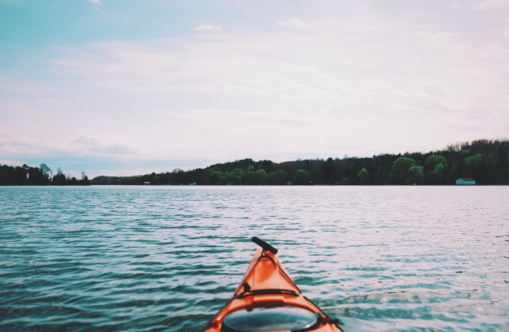

Phone off, out-of-office reply on. When it comes to long-distance hikes, you'd be hard-pressed to find a better country than Norway. With cozy, for-public-use cabins dotting the hills and a landscape that just won't quit, this could be the excuse you've been waiting for.
With the multitude of fjords, rivers and waters in Norway, kayaking has become a really popular activity. And it's no wonder, being surrounded by magnificent fjord and nature landscape in a kayak is a relaxing and fun way to experience the sights. Enjoy a guided kayaking tour through epic Norwegian scenery.

Nothing beats the utter exhilaration of succeeding a climbing route. However, the dizzying heights of Norwegian mountains and frozen waterfalls are not for the squeamish.